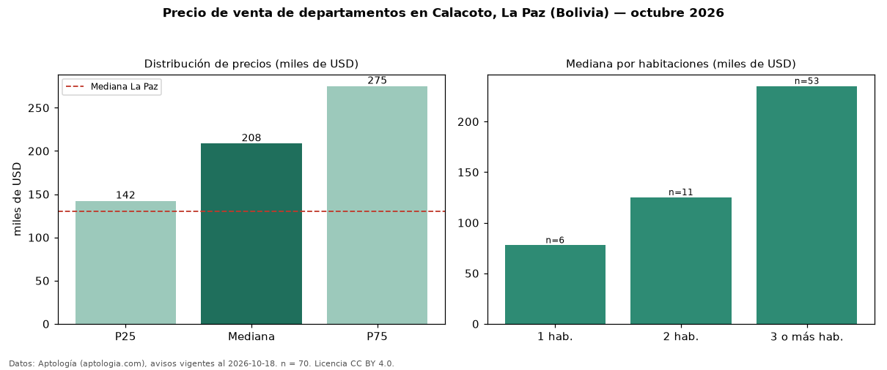

Precio de venta de departamentos en Calacoto, La Paz (Bolivia) — octubre 2026
En Calacoto, La Paz (Bolivia), la mediana de precio de venta de departamentos es USD 208.500, según 70 avisos vigentes. Eso es 60 % por encima de la mediana de La Paz para departamentos (USD 130.000). Por metro cuadrado, la mediana es USD 1.241/m² (n = 64 avisos con área), 13 % por encima de La Paz (USD 1.099/m²). Por precio mediano es el puesto 1 de 5 zonas de La Paz con al menos 30 avisos de departamentos en venta (USD): entre las más caras. Con el precio por m² de alquiler del mismo segmento (USD 6,50/m² al mes), la rentabilidad bruta implícita es 6,3 % anual (aproximación con medianas de ofertas distintas). El área mediana anunciada es 164 m². El segmento con más oferta es el de 3 o más habitaciones (53 avisos, mediana USD 235.000); pasar de 1 habitación a 3 o más habitaciones cambia la mediana +203 %. La cuota de mantenimiento o condominio mediana declarada es USD 60,00 al mes (n = 53). Datos: Aptología (aptologia.com), CC BY 4.0 — https://www.aptologia.com/bo/venta/la-paz/calacoto. Archivos: PDF, CSV con las cifras y gráfica PNG.

| Avisos únicos | 70 |
|---|---|
| Percentil 25 | COP 142.250 |
| Mediana | COP 208.500 |
| Percentil 75 | COP 275.000 |
| Mediana por m² | COP 1.240 |
Fuente: avisos vigentes de portales inmobiliarios recopilados por Aptología, deduplicados (mínimo 30 avisos únicos por celda). Precios pedidos, no cerrados. Fecha: 2026-10-18.